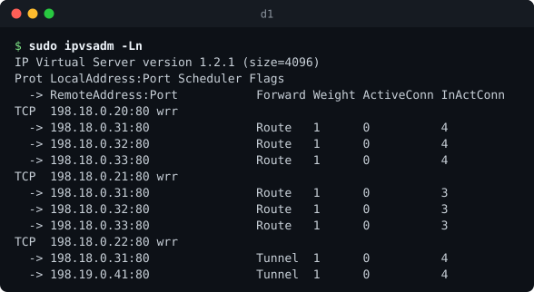
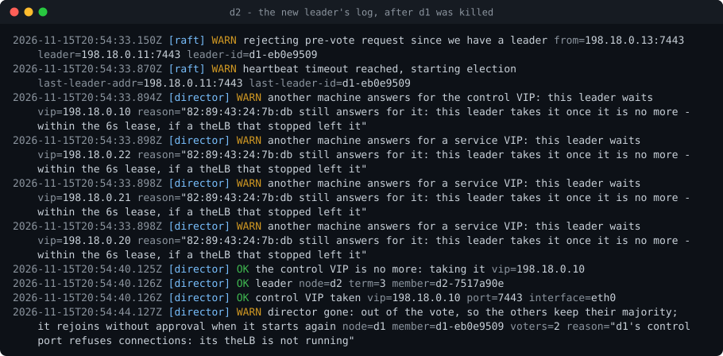

Get started
Try it on one machine
The lab builds a whole theLB setup inside one Linux machine - three directors, four backends, a router and a client - with nothing on your real network.
Start the lab#
You need a Linux machine, root (sudo), Go, python3 and curl. From the source tree:
make labmake lab builds a binary of its own (bin/lab/thelb) and starts the lab. Each machine is a network namespace - a separate network stack inside the same Linux kernel. They live on 198.18.0.0/24, a range reserved for testing, so nothing reaches your own network.
| Node | Address | What |
|---|---|---|
d1, d2, d3 | 198.18.0.11-.13 | directors; the control VIP is 198.18.0.10, port 7443 |
b1, b2, b3 | 198.18.0.31-.33 | backends, each with two small web servers: port 80, and 8080, 9090 or 7070 |
b4 | 198.19.0.41 | a backend behind a router, in another network |
c | 198.18.0.100 | the client |
And three services:
| Service | VIP | What it shows |
|---|---|---|
web | 198.18.0.20:80 | direct routing to port 80 on b1, b2 and b3 |
mapped | 198.18.0.21:80 | each backend on a port of its own: it maps port 80 to 8080, 9090 or 7070 |
far | 198.18.0.22:80 | IP-in-IP to b4, behind the router, and b1 |
Look around#
test/lab.sh drives the lab. run <node> <command> runs a command on a node; thelb there is the lab's binary.
sudo test/lab.sh curl 12 # the client fetches web 12 times, and counts who answered
sudo test/lab.sh curl 9 198.18.0.21 # the same for mapped
sudo test/lab.sh curl 8 198.18.0.22 # and far, by IP-in-IP
sudo test/lab.sh run d1 thelb status # the summary; also: status directors, backends, vips, all
sudo test/lab.sh run d1 ipvsadm -Ln # what theLB programmed into IPVS, on the leader
sudo test/lab.sh run b2 nft list table inet thelb # b2's port mapping
sudo test/lab.sh logs d1 # follow a node's log
As text
$ sudo test/lab.sh curl 12
4 hello from b1
4 hello from b2
4 hello from b3
$ sudo test/lab.sh curl 9 198.18.0.21
3 hello from b1, on port 8080
3 hello from b2, on port 9090
3 hello from b3, on port 7070
$ sudo test/lab.sh curl 8 198.18.0.22
4 hello from b1
4 hello from b4, behind the router
Route is direct routing, Tunnel is IP-in-IP.As text
$ sudo ipvsadm -Ln
IP Virtual Server version 1.2.1 (size=4096)
Prot LocalAddress:Port Scheduler Flags
-> RemoteAddress:Port Forward Weight ActiveConn InActConn
TCP 198.18.0.20:80 wrr
-> 198.18.0.31:80 Route 1 0 4
-> 198.18.0.32:80 Route 1 0 4
-> 198.18.0.33:80 Route 1 0 4
TCP 198.18.0.21:80 wrr
-> 198.18.0.31:80 Route 1 0 3
-> 198.18.0.32:80 Route 1 0 3
-> 198.18.0.33:80 Route 1 0 3
TCP 198.18.0.22:80 wrr
-> 198.18.0.31:80 Tunnel 1 0 4
-> 198.19.0.41:80 Tunnel 1 0 4 Break things#
sudo test/lab.sh app b2 down # b2's web servers stop: theLB gives b2 weight 0
sudo test/lab.sh app b2 up # and it gets traffic again
sudo test/lab.sh kill d1 # the leader crashes: another director takes the VIPs
sudo test/lab.sh start d1 # it comes back, and rejoins without approval
sudo test/lab.sh stop b3 # b3 stops cleanly, and gives its VIPs up first
sudo test/lab.sh serve d2 # a backend on d2's machine, beside its director: d2-webWhen the leader crashes, the new leader's log tells the story - the old leader is gone, the VIP is taken once it is free, and the dead director is taken out of the vote:

kill d1.As text
2026-11-15T20:54:33.150Z [raft] WARN rejecting pre-vote request since we have a leader from=198.18.0.13:7443 leader=198.18.0.11:7443 leader-id=d1-eb0e9509
2026-11-15T20:54:33.870Z [raft] WARN heartbeat timeout reached, starting election last-leader-addr=198.18.0.11:7443 last-leader-id=d1-eb0e9509
2026-11-15T20:54:33.894Z [director] WARN another machine answers for the control VIP: this leader waits vip=198.18.0.10 reason="82:89:43:24:7b:db still answers for it: this leader takes it once it is no more - within the 6s lease, if a theLB that stopped left it"
2026-11-15T20:54:33.898Z [director] WARN another machine answers for a service VIP: this leader waits vip=198.18.0.22 reason="82:89:43:24:7b:db still answers for it: this leader takes it once it is no more - within the 6s lease, if a theLB that stopped left it"
2026-11-15T20:54:33.898Z [director] WARN another machine answers for a service VIP: this leader waits vip=198.18.0.21 reason="82:89:43:24:7b:db still answers for it: this leader takes it once it is no more - within the 6s lease, if a theLB that stopped left it"
2026-11-15T20:54:33.898Z [director] WARN another machine answers for a service VIP: this leader waits vip=198.18.0.20 reason="82:89:43:24:7b:db still answers for it: this leader takes it once it is no more - within the 6s lease, if a theLB that stopped left it"
2026-11-15T20:54:40.125Z [director] OK the control VIP is no more: taking it vip=198.18.0.10
2026-11-15T20:54:40.126Z [director] OK leader node=d2 term=3 member=d2-7517a90e
2026-11-15T20:54:40.126Z [director] OK control VIP taken vip=198.18.0.10 port=7443 interface=eth0
2026-11-15T20:54:44.127Z [director] WARN director gone: out of the vote, so the others keep their majority; it rejoins without approval when it starts again node=d1 member=d1-eb0e9509 voters=2 reason="d1's control port refuses connections: its theLB is not running"See When things fail for every case.
start takes extra flags, so you can try the metrics and debug logs:
sudo test/lab.sh stop d1
sudo test/lab.sh start d1 --debug --metrics 198.18.0.11:9100Take it away#
make lab-downThis stops every node and deletes the namespaces. Nothing is left on the machine.
A thousand services#
make scale N=1000 builds a lab of its own with three directors, three backends and a thousand services, each on its own VIP. It prints what that costs: how long it took to create the services and bring their VIPs up, the leader's CPU and memory at rest, how long thelb status takes, and a failover. On one CPU, a thousand services used about 10% of it on the leader, and every VIP was back about 10 seconds after the leader was killed.